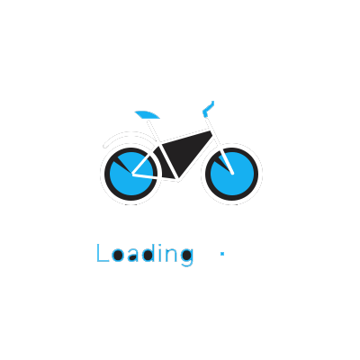

-
-
- {{ item.trainno }}
- {{ item.starttime }}
- {{ item.endtime }}
- {{ item.costtime }}
- 商务座：{{ item.sw }}
- 特等座：{{ item.td }}
- 一等座：{{ item.yd }}
- 二等座：{{ item.ed }}
- 高级软卧：{{ item.gr }}
- 软卧：{{ item.rw }}
- 硬卧：{{ item.yw }}
- 软座：{{ item.rz }}
- 硬座：{{ item.yz }}
- 无座：{{ item.wz }}